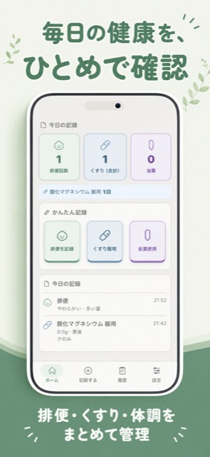
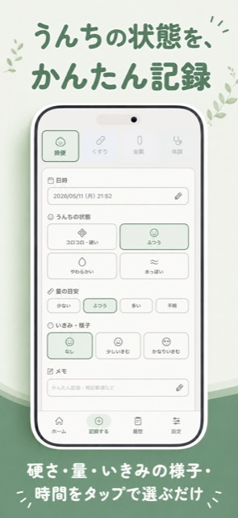
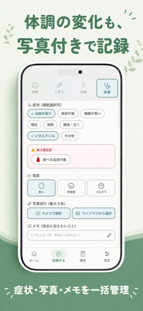
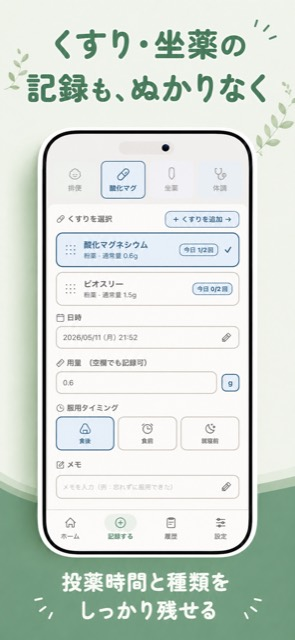
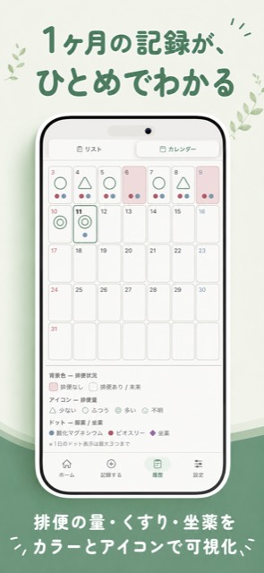

こんな方におすすめ
- お子さんの便秘や排便状況を毎日記録したい親御さん
- 複数の薬の飲み忘れが心配な方
- 受診のときに、排便・服薬の経過を医師に見せたい方
- ご自分や介護中のご家族の服薬・排便を管理したい方
主な機能
排便記録
状態（コロコロ〜水っぽい）・量・いきみの様子をワンタップで記録。
くすり記録
服用タイミング・用量・1日の服薬回数を管理。次回の服薬予定も自動で計算します。
坐薬記録
使用した坐薬の種類と、使用後の排便の有無まで記録できます。
体調記録
症状・つらさの程度・写真をセットで記録。気になる症状を見える化します。
カレンダー表示
月ごとの排便・服薬状況をひと目で確認。排便がない日は自動でハイライトされます。
週間レポート
1週間の排便・服薬状況を自動で集計。先週との比較で、変化がひと目でわかります。
診察メモ
受診時の先生からの指示や処方変更、次回受診日をまとめて記録。通院前の振り返りにも便利です。
選ばれる3つの理由
オフライン対応
通信環境がなくても安心。記録はすべてお使いのiPhoneに保存されます。
シンプルな操作
むずかしい設定は不要。インストールしてすぐに使い始められます。
文字サイズ調整
標準・大・特大の3段階で、見やすい大きさに調整できます。
画面イメージ





よくある質問
- 無料で使えますか？
- はい、無料でお使いいただけます。広告が表示されます。
- Androidには対応していますか？
- 現在はiPhoneのみ対応しています。
- 記録したデータはどこに保存されますか？
- 記録データはお使いのiPhone内に保存され、外部のサーバーには送信されません。詳しくはプライバシーポリシーをご覧ください。
- 医療機器ですか？
- いいえ。排便・くすり・体調を記録して整理するためのツールで、診断や治療を行うものではありません。
ご利用にあたって
記録アプリです。医療の判断は医師・薬剤師にご相談ください。
ぽんぽんログは記録を整理するためのアプリで、診断・治療・薬の調整の代わりにはなりません。気になる症状がある場合や、薬の量・飲ませる間隔については、医師・薬剤師の指示に従ってください。
開発者より
個人で開発・運営しています。